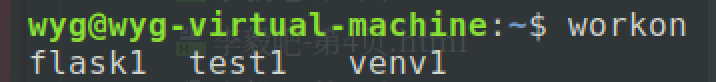

django入门
1.虚拟环境的搭建
- 为什么需要虚拟环境
django是一个用来开发python网站的框架。因为在开发过程中要用到很多的python包，而python包和django框架本身以来特定的python版本的，当系统的python版本改变的时候，对应的python包和django框架可能出现兼容的问题，所以在开发的时候，我们一般会创建一个隔离的python虚拟环境，在虚拟环境里安装django和python包来工作。（虚拟环境还能方便的管理项目依赖的python包）
安装虚拟环境
sudo pip install virtualenv安装虚拟环境扩展包
sudo pip3 install virtualenvwrapper
安装虚拟环境扩展包的目的是使用更加简单的命令来管理虚拟环境
- 配置虚拟环境
修改用户家目录下的配置文件.bashrc，添加如下内容：
使用export WORKON_HOME=$HOME/.virtualenvs source /usr/local/bin/virtualenvwrapper.shsource .bashrc命令使配置文件生效。 创建python3虚拟环境的命令如下：
mkvirtualenv -p python3 虚拟环境名称
# 例如：
mkvirtualenv -p python3 test1
# 这样就在用户家目录的.virtualenvs目录下创建了一个新的目录test1，test1下保存的就是虚拟环境
查看当前有哪些虚拟环境，在终端输入workon，然后按3次tab键，或者输入workon加一个空格，然后按两下tab键  使用某个虚拟环境的命令如下：
workon 虚拟环境名称
例如：
workon test1
删除虚拟环境，需要先退出再删除
- 退出：
deactivate
- 删除：
rmvirtualenv test1
- 在虚拟环境中安装python包
pip install 包名称
注意：在虚拟环境中安装python包不需要用sudo，否则会安装到主机里，而不是虚拟环境里
- 安装django
pip3 install django
django基础
1.终端创建django项目
- 创建django项目
django-admin startproject 项目名
- 创建应用
python3 manage.py startapp app名
注意：使用终端创建的项目，需要手动把创建的应用名称写到setting.py文件的installed_apps配置项里
- 启动django开发服务器
python3 manage.py runserver
2.pycharm创建django项目
直接新建django项目，选择解释器的时候，可以选择一个虚拟环境的python解释器的位置。如果虚拟环境没有django框架的话，会先安装django框架（这样安装django框架比较慢，不如直接在终端中启动虚拟环境然后安装django框架的速度快）